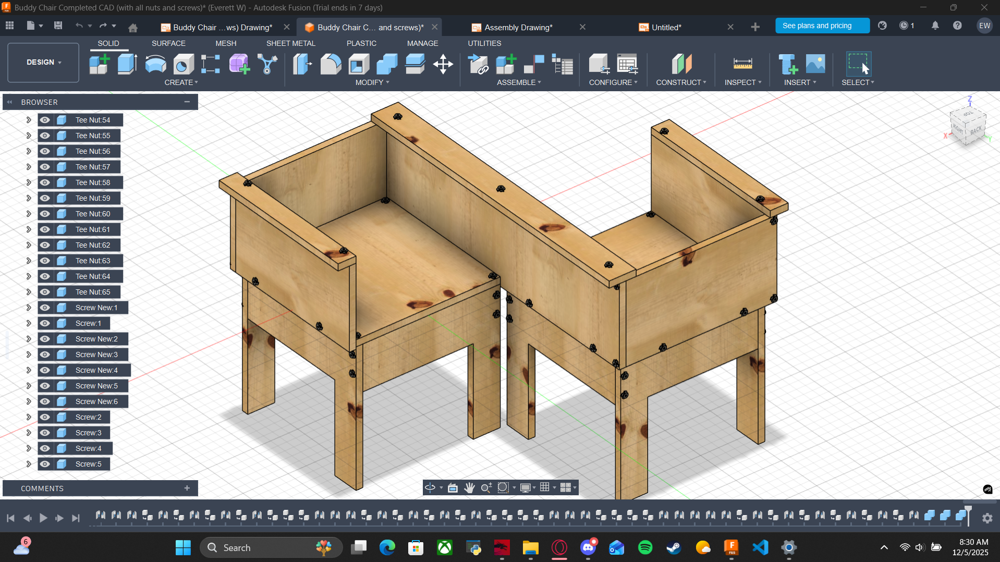
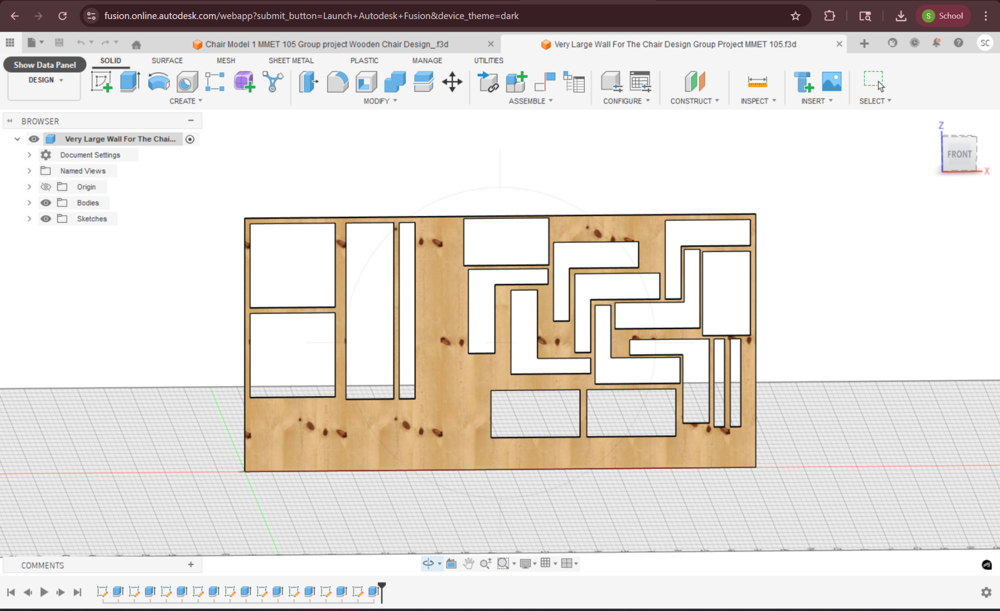
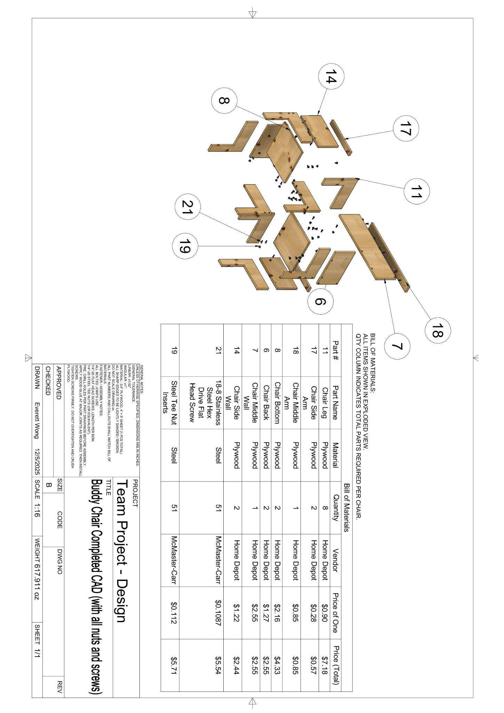
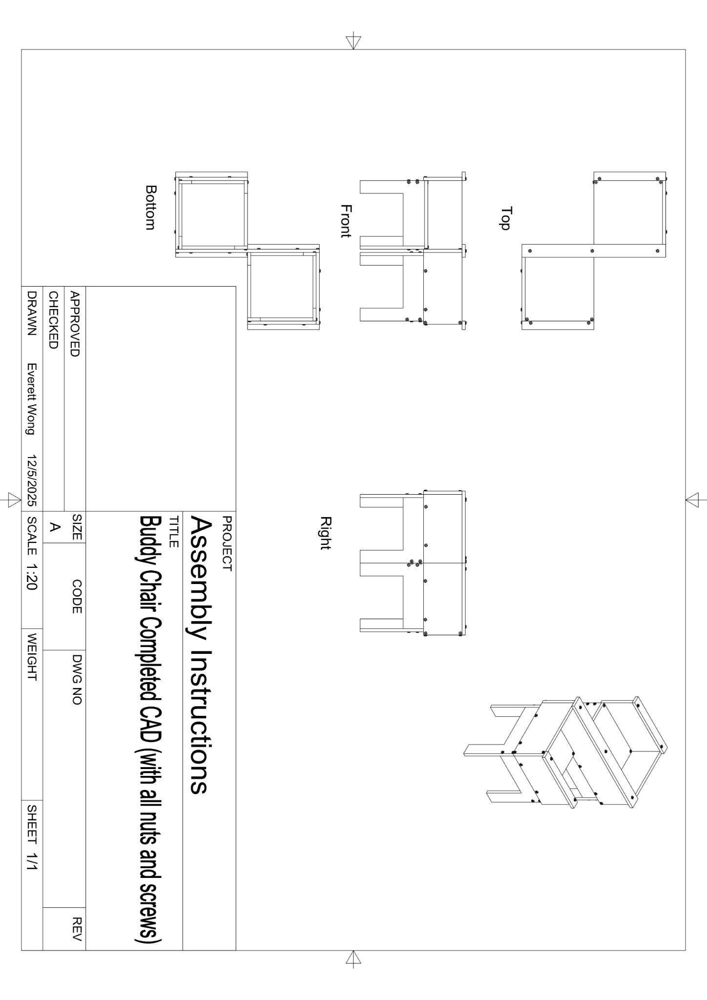

MMET 105 · Team project · Lab
Buddy Chair — from parts to a buildable assembly.
A dual-seat plywood chair selected from a five-concept design matrix. My share of the package was the documentation that turns individual parts into something you can nest, source, and assemble: the assembly drawing, exploded view and BOM, sheet-nesting layout, and step-by-step instructions.
My role
Assembly drawing · exploded view & BOM · nesting · assembly instructions
Not mine
Individual part drawings — Zaid Al-Abdali
Tools
Autodesk Fusion 360 · McMaster-Carr · Home Depot
Hardware
51× 1/4-20 flat heads · 51× tee-nut inserts · 3/4" plywood
01 — Concept selection
Buddy Chair won a six-criterion matrix.
The team scored five concepts — Normal Chair, Soccer Ball, Wavy Chair, Gorilla Couch, and Buddy Chair — on style, structure, durability, comfort, material quality, and manufacturability (60 points possible). Buddy Chair led at 47 / 60, with a perfect 10 on manufacturability.
| Concept | Total / 60 |
|---|---|
| Buddy Chair ← selected | 47 |
| Gorilla Couch | 43 |
| Wavy Chair | 40 |
| Normal Chair | 37 |
| Soccer Ball | 36 |
02 — Assembly model
Two seats, offset — fully hardware-detailed in Fusion.
The finished CAD model carries the plywood panels plus every screw and tee nut in place. Drawn by me; filename on the capture marks the file as Everett W.

03 — Nesting
Parts laid out on one sheet before anything is cut.
Nesting is the manufacturability check that scored a 10 on the matrix: fit the plywood parts onto stock so material waste is visible before you buy another sheet.

04 — Exploded view & BOM
Drawn by Everett Wong — callouts tied to a real parts list.
The exploded drawing is the contract between CAD and the shop floor: balloon numbers match the BOM, plywood is 3/4" from Home Depot, and fasteners are sourced from McMaster-Carr (1/4-20 flat heads and tee-nut inserts, 51 each).

| # | Part | Qty | Material / vendor |
|---|---|---|---|
| 11 | Chair Legs | 8 | Plywood · Home Depot |
| 17 | Chair Side Arms | 2 | Plywood · Home Depot |
| 18 | Chair Middle Arm | 1 | Plywood · Home Depot |
| 8 | Chair Bottoms | 2 | Plywood · Home Depot |
| 6 | Chair Backs | 2 | Plywood · Home Depot |
| 7 | Chair Middle Wall | 1 | Plywood · Home Depot |
| 14 | Chair Side Walls | 2 | Plywood · Home Depot |
| 21 | 1/4-20 flat head screws | 51 | Steel · McMaster-Carr |
| 19 | 1/4-20 tee nut inserts | 51 | Steel · McMaster-Carr |
Drawing notes that matter on the floor
Dimensions in inches. Pre-drill before assembly. Lightly sand / break sharp edges. Optional wood glue at major joints — do not overtighten screws into plywood.
05 — Assembly instructions
A sequence someone else can follow without me in the room.
Orthographic + isometric assembly views (Drawn By Everett Wong) plus a numbered build list: verify hardware, pre-drill, install tee nuts from the hidden faces, legs to bottoms, walls, backs, then arms — finish with a square / tightness check.

| Step | Action |
|---|---|
| 0 | Gather parts and hardware per BOM |
| 1 | Pre-drill all screw and tee-nut holes per the part drawings |
| 2 | Install tee nuts from hidden / back faces, flanges flush |
| 3 | Assemble eight legs to the two bottoms |
| 4 | Attach side walls and middle wall to the bottoms |
| 5 | Install the two back panels |
| 6 | Mount side arms and middle arm |
| 7 | Final check — joints tight, chair sits square, edges sanded |
06 — Attribution
What I own vs. what I don't claim.
-
My deliverables
Full assembly CAD (with fasteners), assembly drawing, exploded view and BOM, nesting layout, and the written assembly instructions.
-
Part drawings — Zaid Al-Abdali
The individual orthographic part sheets (title blocks Drawn By Zaid Al-Abdali) are his. They are referenced for hole locations during pre-drill, but they are not presented here as my work.